A diploma by Grade 9
Skill-based IT from Std 5, and a Diploma in Computer Science with Bharathidasan University.
Our students earn a Diploma in Computer Science from Bharathidasan University by Grade 9, alongside the Tamil Nadu State Board syllabus. Pre-KG to 10th Standard, in a school where every child is known by name.
Not claims — things you can check.
Skill-based IT from Std 5, and a Diploma in Computer Science with Bharathidasan University.
100% board results for ten consecutive years — not one exceptional year.
Small classes mean teachers know each child by name, and parents know their teachers.
Road safety duty, awareness drives and national days — responsibility learned by doing.
We began in 2000 with five students and a simple belief — that love, knowledge and wisdom belong together in every classroom. The school is operated by the A.M. Muthuramaswamy Educational Trust.
Today more than 500 children learn, play and grow with us, following the Tamil Nadu State Board syllabus from Pre-KG to 10th Standard, guided by teachers who know them by name.
Read Our Story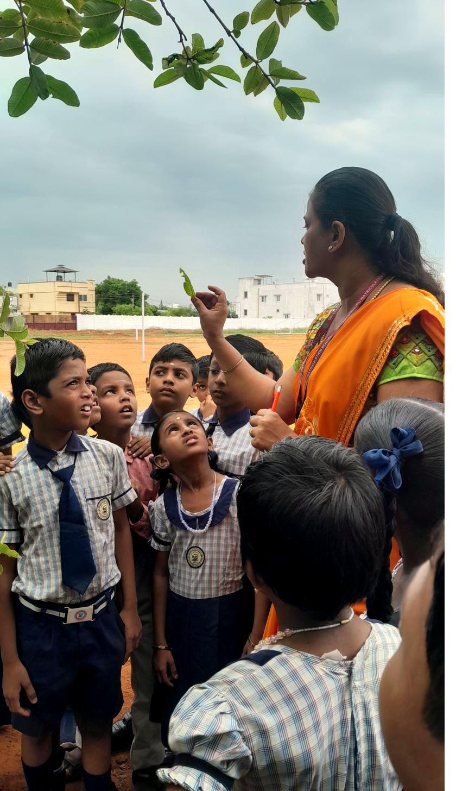
Through the School-University Industry-Tie-up Scheme, in association with Bharathidasan University, Tiruchirappalli, our students from Std 5 to Std 9 learn skill-based IT alongside their regular lessons.
On completing Grade 9, each child earns a Diploma in Computer Science — a head start very few schools in the region can offer.
Education is not about marks alone. It is about building confident, compassionate and responsible citizens.
Every child finds something of their own here — on the stage, on the ground, or in quiet practice.
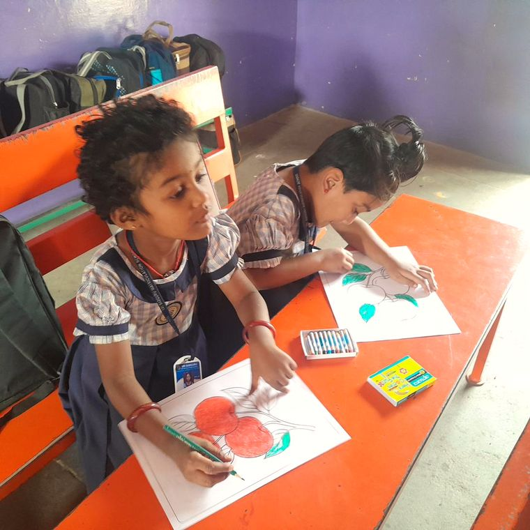
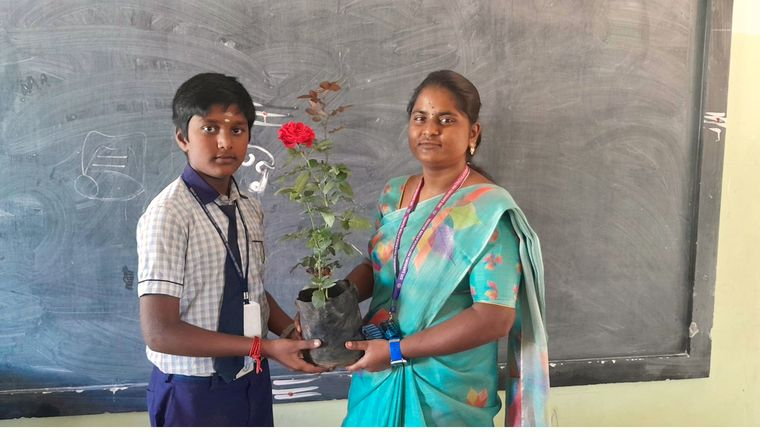
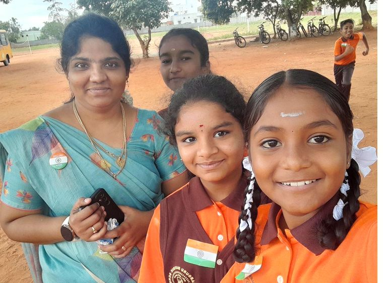
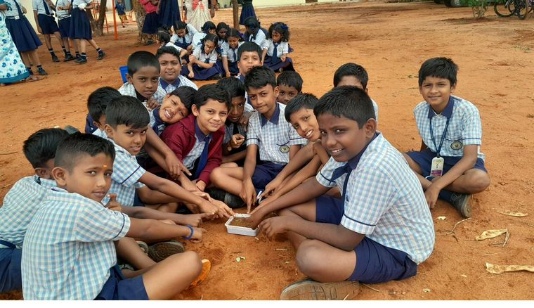
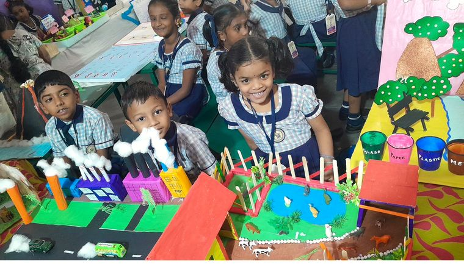
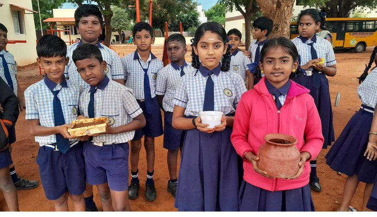
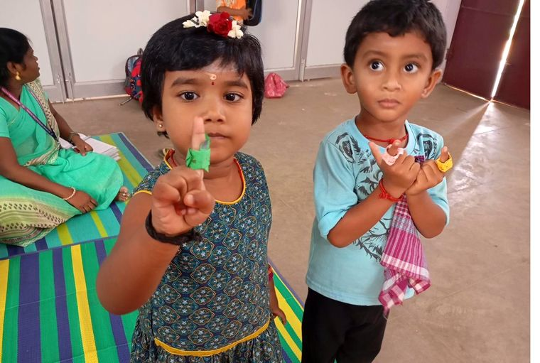
From Olympiads to the sports ground, our students take part — and excel — well beyond the classroom.
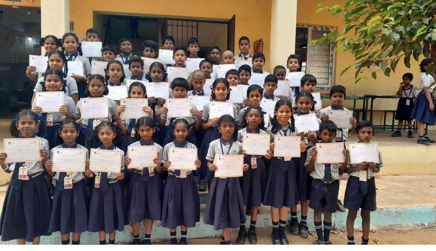
Sri Sai Olympiads and talent-search examinations, with medals and certificates every year.
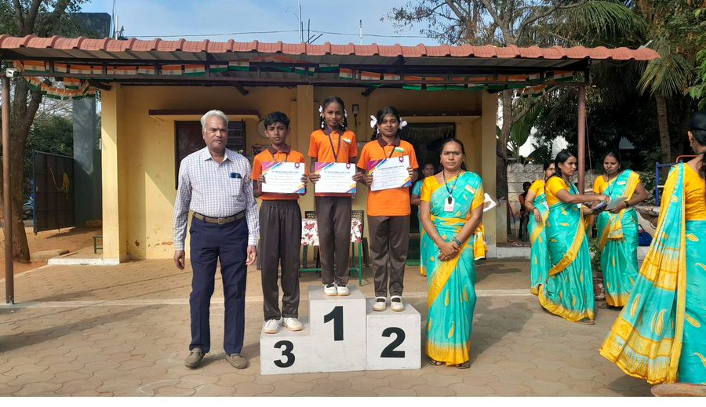
An annual Sports Day, inter-school events and district-level participation.
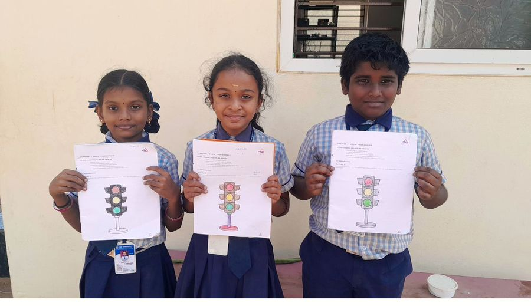
Road Safety Patrol, house responsibilities and student-led awareness drives.
Kept simple, safe and well used.
Hands-on learning for physics, chemistry and biology.
Home of the SUITS programme and regular computer classes.
A quiet reading space with books in Tamil and English.
Digital teaching aids that make lessons visual and engaging.
Dedicated physical training with an annual Sports Day.
Our own school vans covering areas around Theethipalayam.
Short films from our YouTube channel.
Pre-KG to 10th Standard. Send an enquiry and our office will call you back, or simply visit the school — we'd love to show you around.